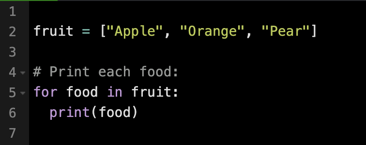

A for loop can be used to iterate through a list and perform an action for each element one by one.
The correct syntax for a for loop assigns the current element of the list to a variable during each iteration.
Basic syntax for a for loop:
for (temporary value) in (a list):
# Code block
Full example of a for loop iterating through different foods
Loops can be placed inside other loops, which is known as nesting. Nested loops are useful for accessing
elements within lists that are themselves contained in other lists. The item selected by the outer loop can
be used as the list for the inner loop to iterate over.